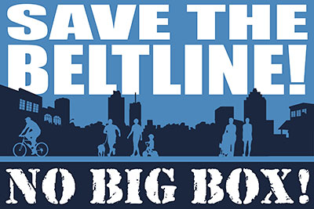

Yard signs are $5 each. Order yours by writing Erica Jong.
Pay by check, cash or credit card when you get your sign.
Write Erica to order your signs - EricaJong@Gmail.com
Yard signs are $5 each. Order yours by writing Erica Jong.
Pay by check, cash or credit card when you get your sign.
Write Erica to order your signs - EricaJong@Gmail.com
Smart Glenwood
Historic archive of the community's campaign to thwart a Big Box Walmart.Learn the latest details from the NPU-W Facebook Page
View Third Fuqua Application (Referred to as Second Revised)
Regarding the proposed development at 800 Glenwood Ave...
- The Fuqua application is not transit oriented and does not meet any of the principles or goals of the BeltLine project.
- The development is all commercial retail with no residential component. The project should include a mixed-use component to support future transit - especially in an area where a station will be located.
- Large parking lots for over 1,000 cars are not transit oriented or neighborhood friendly, and certainly not pedestrian friendly environments.
- Any development at this location should comply with the requirements of the BeltLine Zoning Overlay and the Sub-Area 4 Plan which was approved by City Council in 2011.
- The application does not include plans to show how storm water will be managed at this site. The very large proposed parking lot will create a large volume of rainwater runoff, which could have a significant impact on storm water sewers.
- Millions of taxpayer dollars and many years have been spent on BeltLine planning and design by Atlanta BeltLine Inc. Approval of this application would be a major setback for the BeltLine vision in this area, and would show blatant disregard for approved plans. It would also serve as a good example of the Department of Planning's waste of taxpayer funds – which is not something that we want to see.
As residents advocating smart development...
1. We want a mix of retail - We want multiple mid-size stores to encourage competition on quality, including a small or medium sized grocery market.
Fuqua application has no mid-size retail!
2. We want density on the Beltline - We embrace multi-story development as defined by the Beltline Master Plan. Higher density residential guarantees that beltline businesses will thrive.
Fuqua application is single-story with no residential!
3. We want localized traffic - We endorse the traffic plan of the Beltline overlay and its emphasis on traffic originating in the local communities.
Fuqua application caters to destination shoppers from outside the neighborhood by creating a massive discount store, while blocking out opportunities for a locally focused, mid-size grocery market and outfitter on the beltline. View Consumer Reports list of the lowest quality grocery stores in the U.S.
4. We want well-designed parking - We want onstreet parking, covered parking and smaller surface lots.
Fuqua application lacks onstreet parking on east-west roads. Proposed parking deck needs revisions to create a walkable neighborhood - reduce exposed parking surfaces, hide west edge of parking deck, add enclosed parking deck(s). View covered parking example as contrasted with
sprawling parking lot in Fuqua Application.
5. We want retail windows - Let in the light with street-facing windows. Avoid the false facades used at Edgewood.
Fuqua application fails to provide street-facing windows on anchor store. Use of small stores to "cheat the system" is not acceptable. The proposed parking deck's southeast corner also has no street frontage.
6. We desire collaboration -
We are interested in bringing the input of the community to the table.
Fuqua application failed to incorporate input from the community.
7. We want safe neighborhoods - Include abundant "eyes on the street" viewpoints from homes and storefronts at ground level to discourage theft.
Fuqua application fails to create a self-policing neighborhood by omitting homes. The city will need to hire extra police to patrol the area after business hours.
8. We want residential and offices - Include multi-story residential, live/work above shops and office space.
Fuqua application fails to provide any residential or office space.
9. We want areas for children - Avoid placing a heavy traffic route and a busy intersection next to the beltline trail! Include a centrally located playground within the Glenwood Place development.
Fuqua application provides no areas for children. Heavy traffic routes intersect the beltline trail in three locations.
10. We want more on-street parking -
Avoid a massive central parking lot. Use a street grid and include covered parking.
Fuqua application has no onstreet parking on the two east-west roads. Covered parking has not been designed to create a walkable neighborhood.
11. We want mid-size retail rather than a megastore - Encourage competition on quality with a mix of
mid-size stores rather than tiny surrounding stores.
Fuqua application has a only one large store. Surrounding stores are too small to provide space for competition on quality.
12. We want stores that match our local demographics - We're concerned local residents will continue to have to drive across town for quality.
Fuqua application fails to provide a store layout that would suit the list of desired stores provided by our local reps to Fuqua Development.
13. We want water retention and reuse - Recycle water for irrigation. Avoid over taxing the city's water treatment facility.
Fuqua application has little or no water retention. There is no evidence of water recycling for irrigation.
14. We want smart street lighting - Reduce overhead lights to keep the night sky dark. Include covered parking.
Fuqua application does not cover the upper level of parking. Excessive uncovered lots are a major departure from the design of the beltline focus group.
This RAND Land-Use Zoning Study in Los Angeles found that single-use commercially zoned blocks in Los Angeles have crime rates that are 45 percent higher than similar blocks that include residential uses.
View a local resident's concept for covered parking below a walkable main street which extends the parking structure from Fuqua's second application, adds residential and eliminates the canyon in front of the anchor store.
View a local resident's concept for covered parking below a walkable main street which extends the parking structure from Fuqua's second application, adds residential and eliminates the canyon in front of the anchor store.
Please contact the city planning office to express your concerns regarding the Fuqua Development Proposal.
Contact Administrative Analyst Cora Kilpatrick at ckilpatrick@atlantaga.gov
Contact James E. Shelby, City of Atlanta Department of Planning Commissioner, 404-330-6037
Learn about the development of adjacent Glenwood Park in the new book Unsprawl by Simmons B. Buntin.